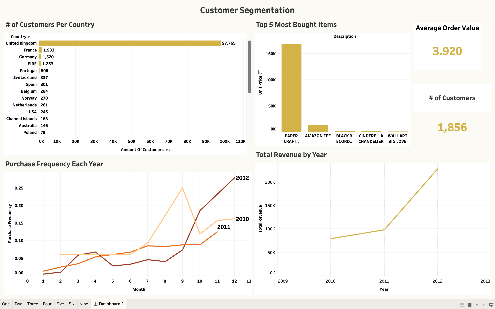
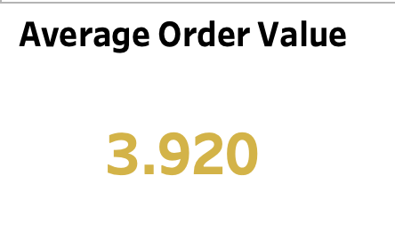
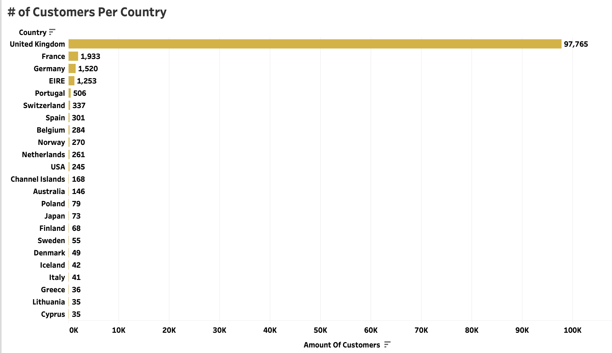
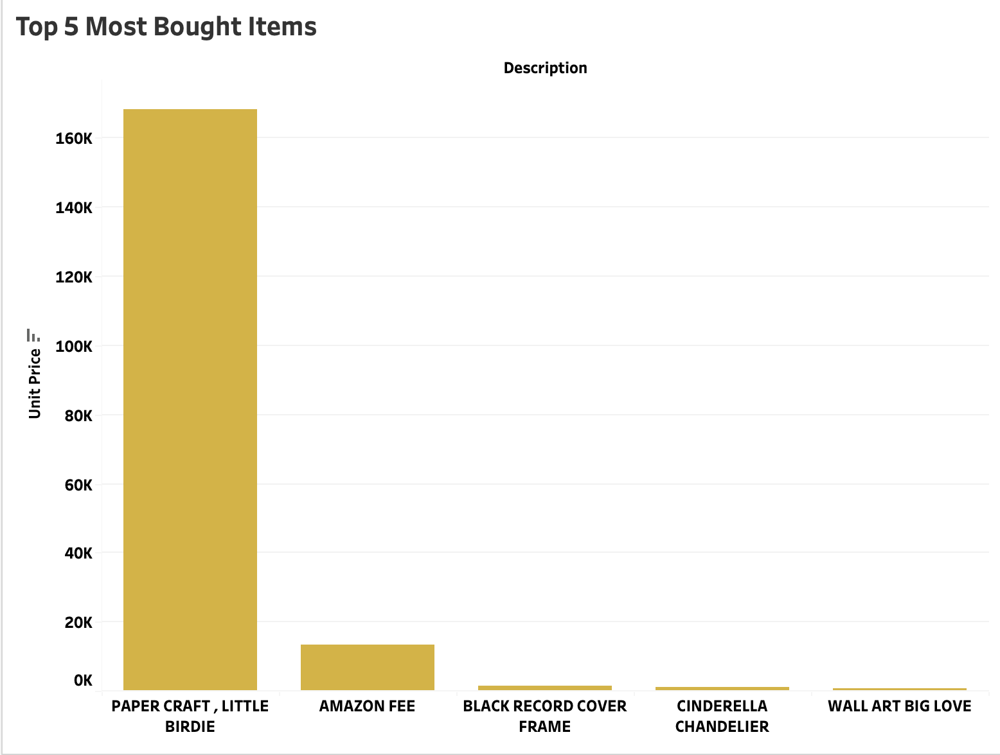
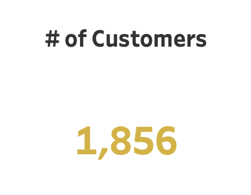
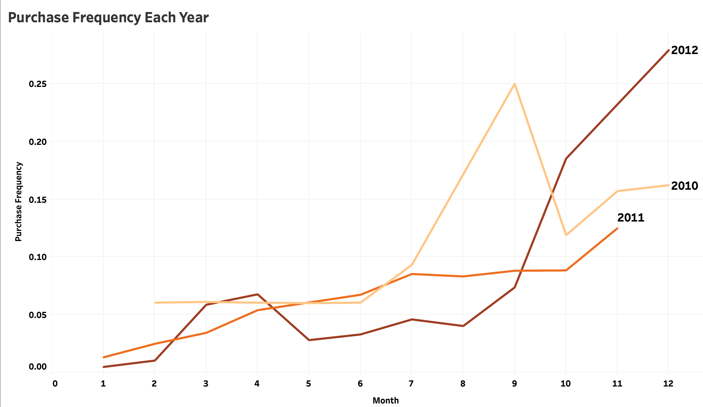
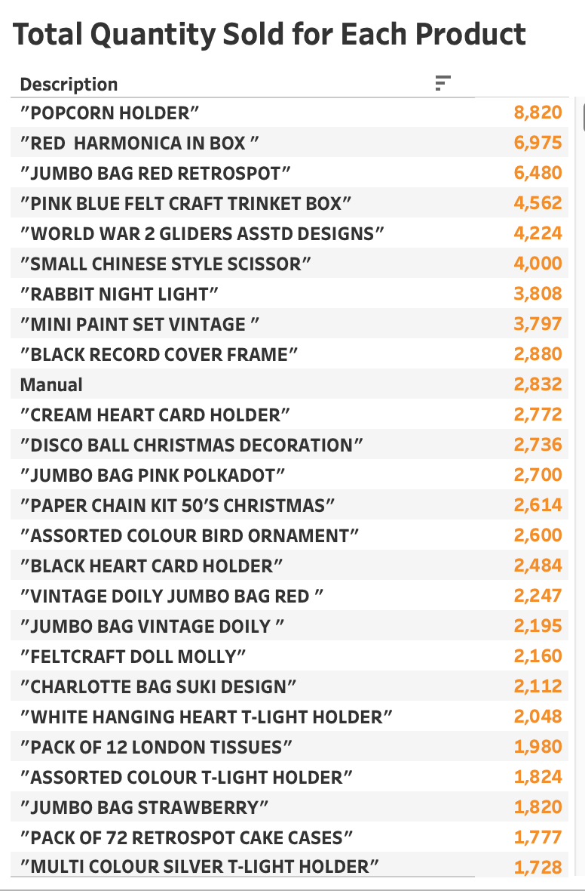

Customer Segmentation for Marketing Strategy
Presented by: Bladimir Nunez
Last Updated: March 4th, 2024

Project Overview
I wanted to see how a retail store can perform better to keep
customers and to expand their domain in the sales world by reaching
new customers as well as keeping costs low. The dataset I used was
from a fake retail store based in the United Kingdom but shipped
worldwide. It contains what the product they sold was and to what
customer based in a country as well as quantity and price of the
product the customer bought and the date they bought it on. I found
insights and gave recommendations for this retail company down below.
Visit GitHub Code!
Visit Tableau Dashboard!
Exploratory Data Analysis (EDA)
1. What is the total revenue generated by the online retail store during the dataset period?

2. What is the average order value (AOV) for the online retail store?
3. Which country has the highest number of customers?
4. What are the top 5 best-selling products?
5. How many unique customers made purchases during the dataset period?
6. What is the distribution of customers based on their purchase frequency (e.g., daily, weekly, monthly)?
7. How many customers have not made a purchase in the last 3 months?
8. What is the average number of days between purchases for each customer?
9. What is the total quantity sold for each product category?
Insights/Recommendations
- 3556 -> 537 products sold
Data Sources
I obtained this retail dataset from DataSet Kaggle contains thousands of datasets and this is titled "online-retail-ii".
Technologies Used
SQL: Data Cleaning/Analysis
Tableau: Data Visualization
Data Cleaning/Preprocessing
Check for missing values, Dropped Unused columns, Split column into new ones, Initial 'invoiceDate' column had years just with 1 digit so removed those and a null date for data consistency
Feature Engineering
To show that orders were cancelled or fufilled I created an 'orderStatus' column that contained a text to show if the order was fufilled or cancelled. I knew if they were cancelled if the invoice number column was a zero and the quantity was a negative number. I split the initial 'invoiceDate' column into two columns: 'PurchaseDate' , 'PurchaseHour'. This showed the date of when the order was fufilled and the hour. This was for better readability.
Data Analysis
`select month(PurchaseDate) as Month, year(PurchaseDate) as year,count(CustomerID) as No_Purchase_Customers from retail where orderStatus = "Cancelled" and month(PurchaseDate) in (10,11,12) group by month(PurchaseDate), year(PurchaseDate);`
Challenges
I would need more data for a more accurate analysis. The data initially started off very messy on the date column so I had to get rid of much it due to that. If the data came clean then I would have more information. More information on cancelled orders would have been great for this analysis. I came up with the idea that in the dataset cancelled orders had no invoice number and a negative quantity. If we had more information on why the order was cancelled then I would have a better idea on how to analyze what we can do to retain orders.